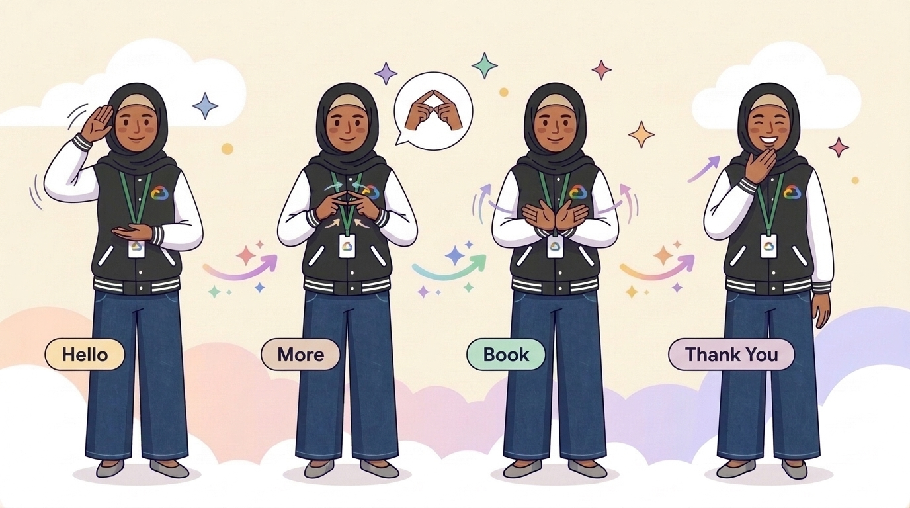
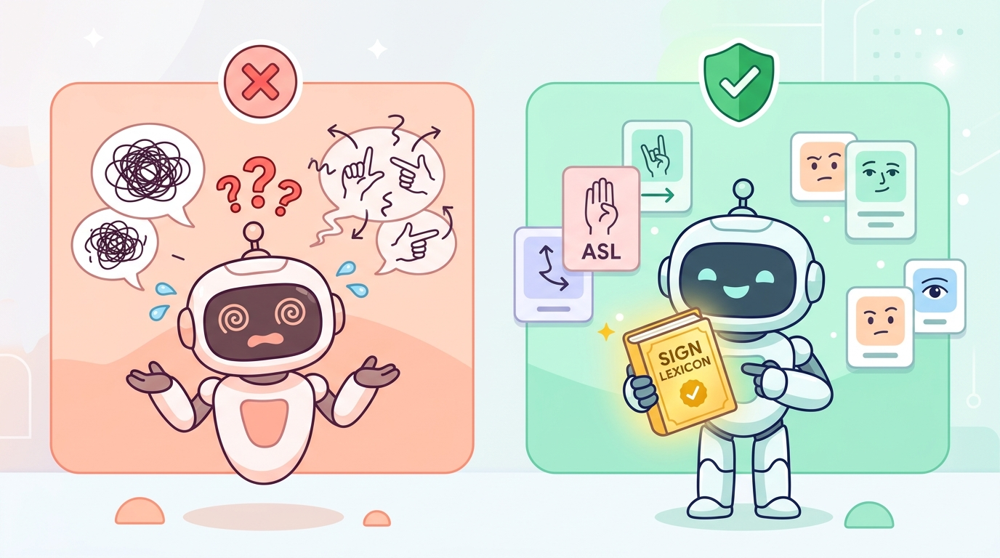
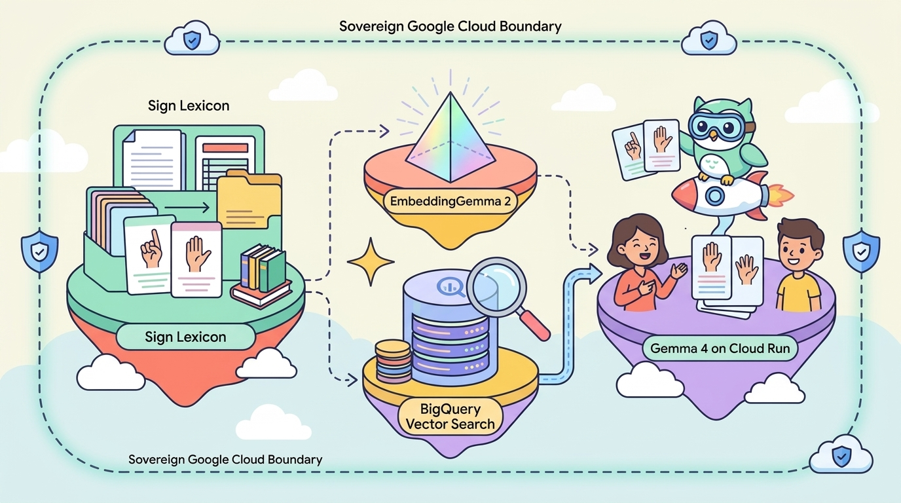
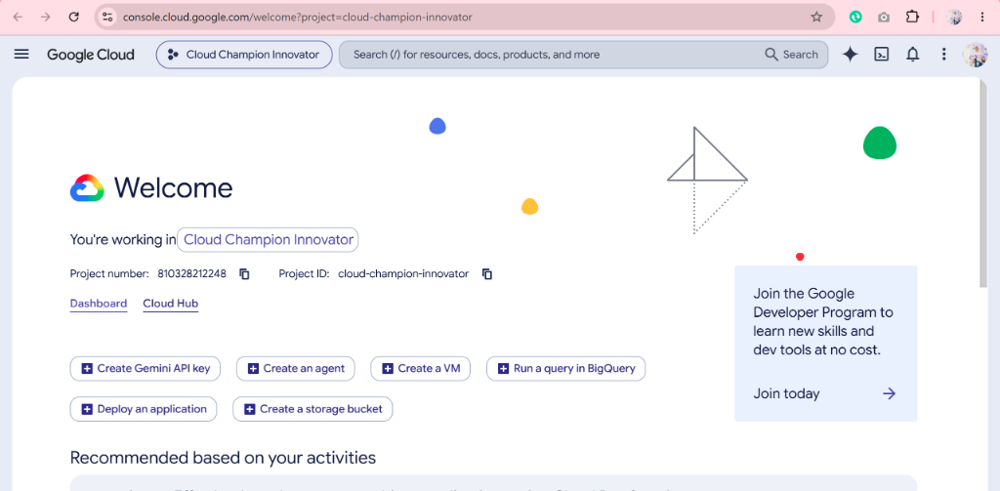
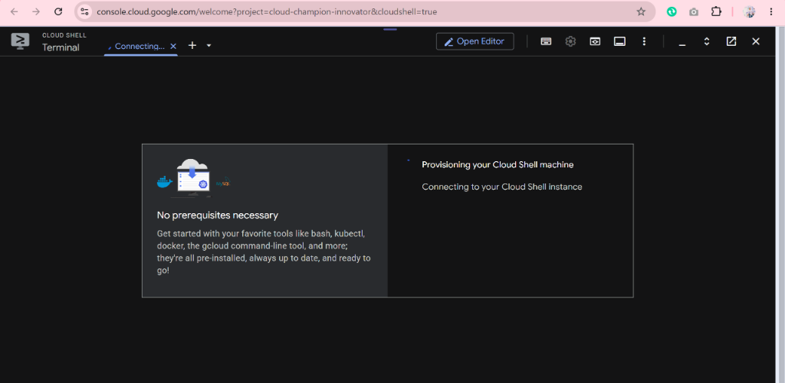
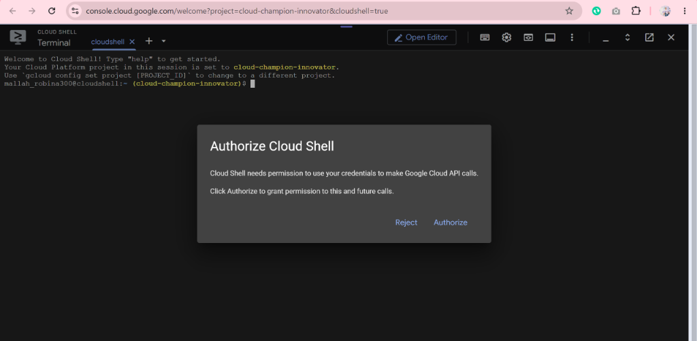
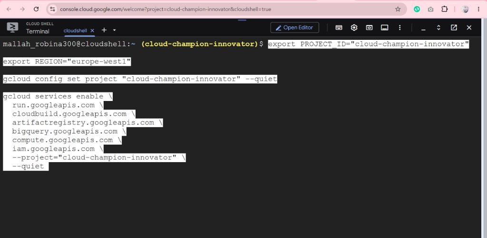
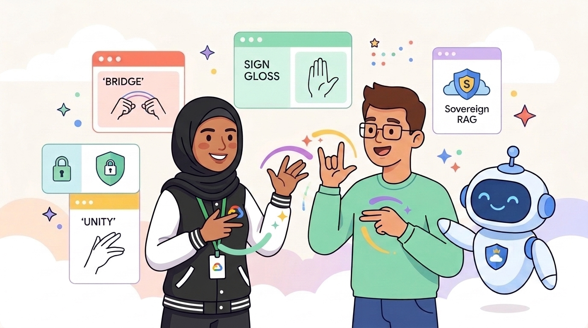
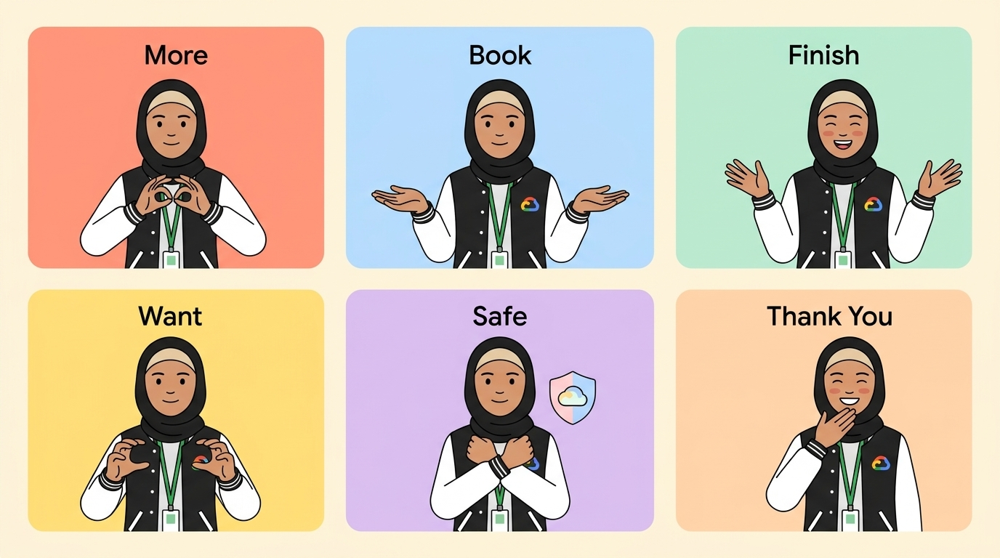

1. Introduction

Author: Robina Mirbahar (Google Developer Expert — AI & Cloud · Women Techmakers Ambassador)
Why SignBridge Was Built (The Problem We Are Solving)
SignBridge was built to close three critical gaps preventing TV news channels, digital media studios, and global corporations from delivering accurate, privacy-safe Sign Language accessibility to 70M+ Deaf viewers and employees:
- 1. The Live-Broadcast Speed Gap: Breaking news teleprompters and live town hall Q&As change seconds before going on air—leaving studio Deaf interpreters zero time to look up specialized financial (
150 bps), emergency (flash flood), or legal signs. - 2. The Generic AI Hallucination Gap: Sign languages (ASL, PSL, BSL) use 3D spatial Topic-Comment grammar and mandatory Non-Manual Facial Grammar (
[brow-raise],[head-shake])—not word-for-word English! Ungrounded LLMs translate English idioms literally (e.g., turning "off the record" into "vinyl music record off table" on live TV). - 3. The Sovereign Embargo & Compliance Gap: Pre-announcement corporate earnings, M&A town halls, and embargoed press briefings contain confidential MNPI that cannot legally be sent to public third-party AI APIs. SignBridge runs 100% inside your private Google Cloud boundary.

RAG vs. Non-RAG Systems on Live Television & Town Halls
| Live Scenario | ❌ Non-RAG (Ungrounded LLM) | ✅ SignBridge Sovereign RAG |
|---|---|---|
| Breaking News Flood Ticker | Signs literal English CAMERA-FLASH + DIRT-FLOOR during emergency |
Retrieves broadcast standard WATER-RISE [CL:5-wave] EVACUATE HIGH-LAND GO-NOW |
| Press Room Embargo ("Off the record") | Hallucinates VINYL MUSIC RECORD OFF-TABLE on live air |
Retrieves journalistic lexicon PUBLIC ANNOUNCE FORBID — LOCK-HOLD SECRET |
| Financial TV Desk (PSL) ("150 basis points") | Outputs unintelligible literal 150 BASE DOTS |
Converts to broadcast PSL 1.5-PERCENT CUT-DOWN + spatial inflation contrast |
| Corporate Earnings & M&A | Exposes confidential MNPI externally & drops negation timing | Zero external egress; enforces [double-O-head-shake] on LAYOFF ZERO-NONE |
Who Can Use SignBridge & How They Use It Step-by-Step
How they use it: Connect newsroom teleprompters (ENPS/iNEWS) to /api/compare so verified ASL/PSL Gloss Cards + Facial Grammar cues pop up on the studio interpreter's confidence monitor in real time.
How they use it: Paste embargoed CEO earnings scripts & M&A FAQs into the private GCP Web UI before global livestreams to generate audited Interpreter Prep Packets with zero SEC data leakage.
How they use it: Load house ASL/PSL/BSL style guides into BigQuery Vector Search (init_db.py) to standardize regional signs and classifier usage across every show and presenter.
How they use it: Train interpreters with the Side-by-Side Comparator to catch English idiom traps and verify HIPAA/ADA safety before going on camera.
agy).
2. Overview of the application

Every component runs inside your private Google Cloud boundary:
embedding_model/(EmbeddingGemma 2 on Cloud Run): Generates 768-dimensional dense embeddings inside an IAM-protected container with pre-baked weights.vector_store/(BigQuery Vector Search): Stores verified ASL & PSL broadcast/corporate sign glosses, handshapes, and Non-Manual Facial Grammar, queried viaVECTOR_SEARCH(..., distance_type => 'COSINE').llm/(Gemma 4 on Cloud Run): Serves open-weightsgemma4:e4bvia Ollama on NVIDIA L4 GPUs (or an automatic 8-vCPU / 16 GiB CPU fallback).orchestration/(FastAPI + Side-by-Side Web UI): Displays Ungrounded LLM vs. Sovereign Grounded SignBridge side-by-side.
3. Set up Cloud Shell and Antigravity CLI
Open Cloud Shell & Authorize



Set Your Active Project & Enable Required APIs
cloud-champion-innovator. Be sure to replace it with your own Google Cloud Project ID (or leave ${GOOGLE_CLOUD_PROJECT} to auto-detect your active Cloud Shell project).
export PROJECT_ID="${GOOGLE_CLOUD_PROJECT}"
export REGION="europe-west1"
gcloud config set project "${PROJECT_ID}" --quiet
gcloud services enable \
run.googleapis.com \
cloudbuild.googleapis.com \
artifactregistry.googleapis.com \
bigquery.googleapis.com \
compute.googleapis.com \
iam.googleapis.com \
--project="${PROJECT_ID}" \
--quiet

Launch Google Antigravity CLI
agy --help agy
agy, run /help to view interactive agent commands like /grill-me and /plan.
4. Plan the architecture with Antigravity
Step 1: Inspect Regional Cloud Run GPU Quota
gcloud compute regions describe "${REGION}" \
--project="${PROJECT_ID}" \
--format="json(quotas)"
Step 2: Submit the /grill-me Architecture Prompt
/grill-me We are building SignBridge, a Sovereign Sign-Language RAG system on Google Cloud for TV newsrooms and corporate town halls where pre-broadcast scripts must never leave our GCP project. Stack: 1. EmbeddingGemma 2 on private Cloud Run 2. BigQuery Vector Search (COSINE) storing ASL & PSL broadcast sign glosses, handshapes, and Non-Manual Facial Grammar [NMM] 3. Open-weights Gemma 4 via Ollama on private Cloud Run (NVIDIA L4 GPU if quota >= 1, else 8-vCPU / 16Gi fallback) 4. Public FastAPI Cloud Run Web UI showing Side-by-Side Ungrounded LLM vs. Sovereign Grounded RAG. Interview me on authentication boundaries, cold-start mitigation, and BigQuery schema choices before producing our implementation plan.
0 NVIDIA L4 quota, llm/cloud_run.sh automatically switches to --cpu=8 --memory=16Gi so your deployment succeeds seamlessly!
5. Generate the RAG application

git clone https://github.com/RobinaMirbahar/signbridge-sovereign-rag-agy.git cd signbridge-sovereign-rag-agy chmod +x setup_env.sh embedding_model/cloud_run.sh llm/cloud_run.sh orchestration/cloud_run.sh cleanup.sh
Run Automated Verification Tests
uv run --with pytest --with fastapi --with httpx pytest tests/test_signbridge.py -v
6. Deploy and verify the application
Deploy the three serverless Cloud Run microservices and initialize BigQuery Vector Search:
source ./setup_env.sh
# 1. Deploy Sovereign EmbeddingGemma 2
(cd embedding_model && ./cloud_run.sh)
# 2. Initialize BigQuery Vector Search & Ingest Broadcast/Corporate Sign Corpus
export EMBEDDING_SERVICE_URL=$(gcloud run services describe signbridge-embeddinggemma \
--project="${PROJECT_ID}" --region="${REGION}" --format="value(status.url)")
python3 vector_store/init_db.py
# 3. Deploy Open-Weights Gemma 4 (Auto L4 GPU or 8-vCPU Fallback)
(cd llm && ./cloud_run.sh)
# 4. Deploy Public Side-by-Side Web UI
./orchestration/cloud_run.sh
7. Test the side-by-side Web UI and explore extensions

Open the live Cloud Run URL printed by ./orchestration/cloud_run.sh and test:
- 📺 Breaking News Flood Ticker: Verify spatial rising-wave classifier
[CL:5-rising-wave]vs. literal English camera-flash error. - 🏢 Embargoed Corporate Earnings & M&A: Confirm zero external egress + explicit negation timing on "zero layoffs".
- 📈 Financial TV Desk (PSL 150 bps): Switch filter to
PSLand inspect broadcast style-guide conversion. - 🎙️ Press Briefing Idiom Trap: Test "off the record" and verify
PUBLIC ANNOUNCE FORBIDgrounding.
8. Clean up resources
Tear down all Cloud Run services and the BigQuery dataset to avoid ongoing charges:
./cleanup.sh
9. Congratulations! 🎉
You have built, verified, and deployed SignBridge Sovereign RAG using Gemma 4, EmbeddingGemma 2, BigQuery Vector Search, Cloud Run, and Google Antigravity!
/api/compare to empower Deaf interpreters and viewers in real time!